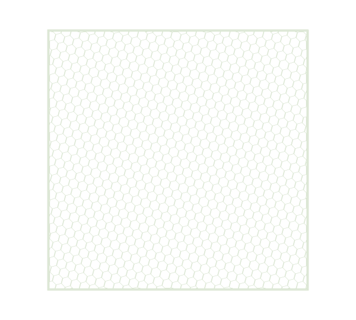

Edited from the owner’s build update received 13 October 2026. No measurements or new GitHub files supplied.
- Associated project
- Learning to measure the air.
- Last revised
Research objective
Develop the wind-tunnel measurement stand so it can accommodate airfoils and model aircraft while supporting lift, drag, pressure, and environmental measurements.
The current setup
Dry ice sits in water in front of the inlet. Air is blown into that setup so the visible flow enters the tunnel; a fan on the opposite side draws air out. The owner reports that the visualization flows smoothly. That description is a qualitative observation, not a measured flow-uniformity result.
Materials and instruments
| Element | Current account |
|---|---|
| Visualization | Dry ice in water in front of the inlet |
| Air movement | Air blown into the inlet setup; outlet fan draws air out |
| Pressure | Differential-pressure sensor; exact model not supplied |
| Forces | Load cells intended for lift and drag measurements |
| Environment | BME280 for environmental conditions |
| Mounting | New stand under development; 3D model planned |
The earlier record identifies HX711 interfaces for the load cells. New wiring and source have not yet been posted, so the linked Arduino program remains an earlier implementation.
Design question
How should the stand support different test objects while keeping the load paths clear and the sensor readings interpretable?
Method and observations
This entry records the owner’s description of the present build. It is not a test procedure. No loads, airspeeds, sensor readings, acceptance thresholds, or repeated trials were supplied with the update.
What is still open
The stand is unfinished. The next step is a 3D model that can accommodate airfoils and model aircraft. Calibration was unfinished in the previous record; no completion update has been provided.
What changed
The visualization approach has moved away from the troublesome smoke system. The present focus is shifting toward the measurement stand. The archived files remain useful evidence, but should not be mistaken for the latest stand configuration.
Next steps
- Finish and document the stand model.
- Record mounting geometry, sensor connections, and channel definitions.
- Complete calibration and publish the procedure and raw records.
- Add the updated files and photographs to GitHub.
Revision record
13 October 2026: Created from the owner’s update. The owner clarified that “cold dryers” meant dry ice placed in water. No new measurements were added.

Sources & related documents
- Aerodynamics Research Lab Rithwik & Rithika Gummadi
- Arduino environmental and pressure logger
- Current honeycomb 3MF archive
See the provenance record for source boundaries and attribution.